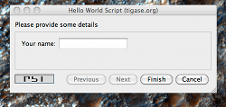
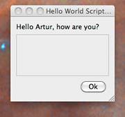
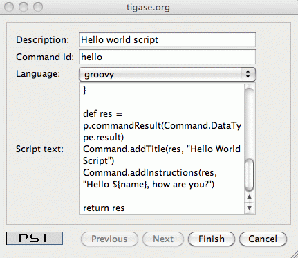

Displaying just a message is very nice but in most cases not very useful. Normally you need to ask the user for some more data or parameters before you can perform any real processing.
Therefore in most cases the administrator script has to display a new window with input fields asking the user (admin) for some more data. In this document we present very simple examples, just an introduction so let’s ask about the administrator name before displaying greetings.

To ask the user for some more information we have to extend example above with some more code:
import tigase.server.*
def p = (Packet)packet
def name = Command.getFieldValue(packet, "name")
if (name == null) {
def res = p.commandResult(Command.DataType.form);
Command.addTitle(res, "Hello World Script")
Command.addInstructions(res, "Please provide some details")
Command.addFieldValue(res, "name", name ?: "", "text-single",
"Your name")
return res
}
def res = p.commandResult(Command.DataType.result)
Command.addTitle(res, "Hello World Script")
Command.addInstructions(res, "Hello ${name}, how are you?")
return resIf you compare both scripts you see that they are quite similar. Before displaying greeting, however, the script tries to retrieve data from the \'name' input field. If the name had been provided the greeting is displayed, otherwise the script asks for the user name.

Please note, in this case the packet sent back to the user is of type form instead of result. The practical difference is that the type result displays only OK button which is pressed doesn’t send any data to the server. The form packet displays more buttons - Finish and Cancel. Whichever you press some data are sent back to the server.
The script demonstrates use of two new methods from the utility class "Command": getFieldValue and addFieldValue.
These two method parameters are actually enough to read the ad-hoc command data. Methods creating input fields in the ad-hoc command need a few arguments more:

There are a few other different utility methods in the Command class to set different types of input fields and they will be described in details later on.
To reload the script simply call "New command script" again, enter the script text and make sure you entered exactly the same command ID to replace the old script with the new one.
Or, of course you can enter a new command id to create a new command and make it available on your server.
When the script is loaded on the server, try to execute it. You should get a new dialog window asking for your name as in the screenshot at the beginning of this section. When you entered your name and pressed "Finish" button you see another window and greetings message with your name.